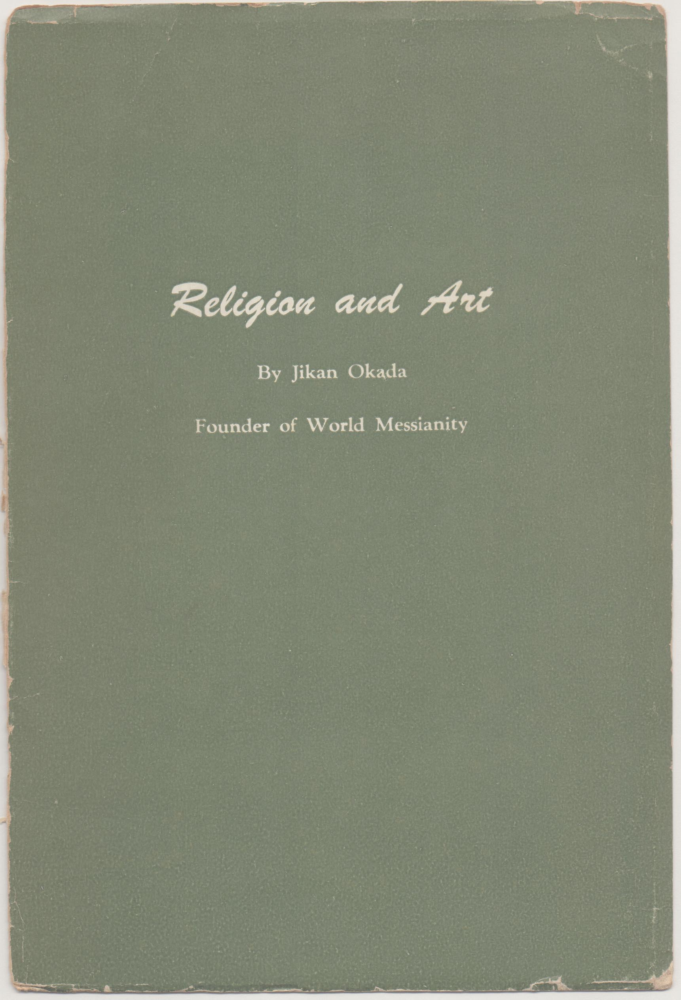

――― 岡
田 自 観 師 の 論 文 集 ――発行誌別
Religion and Art
 |
Religion and Art 英訳御論文１２編を収録 Ａ５ 版 ２８P＋図録 by Jikan Okada Church of World Messianity 112 Tawara-Machi Atami City JAPAN Printed in Japan 1955 |
||
|
|||
巻末にSome art objects owned by the Hakone Museum として収蔵品１２品の写真と解説が収録されている。 |
|||